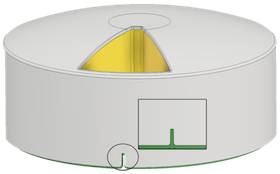

Calibration
Press Start to start calibration, then align the cuts using the buttons. This will be the position marked as #1

Calibration Offset: 0
Calibration Offset: 0
Press Start to start calibration, then align the cuts using the buttons. This will be the position marked as #1
Press the numbers to move to the selected slot. When you're done, press Restore